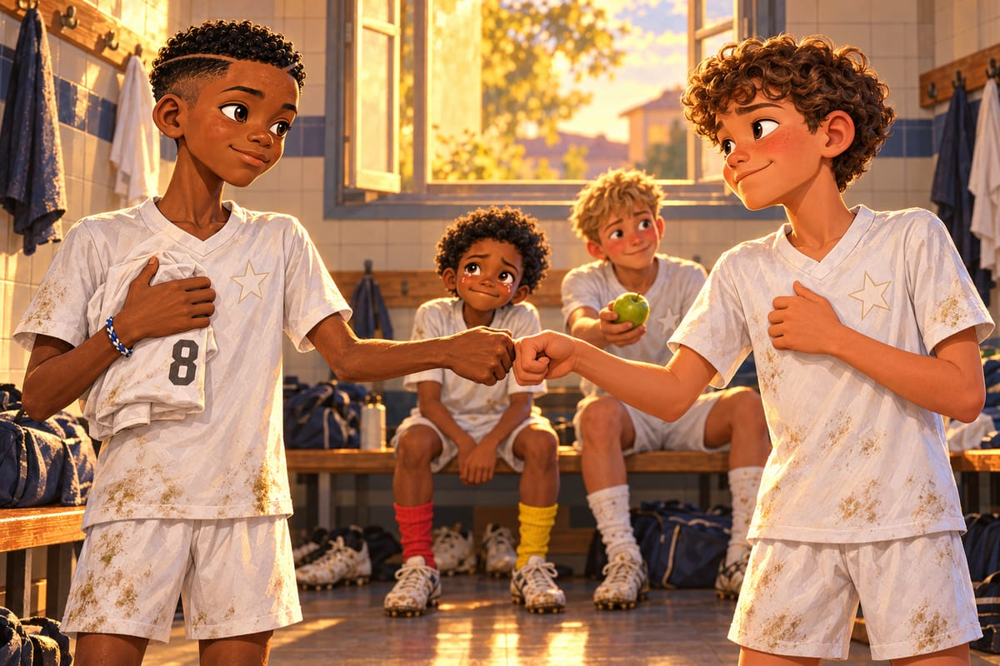
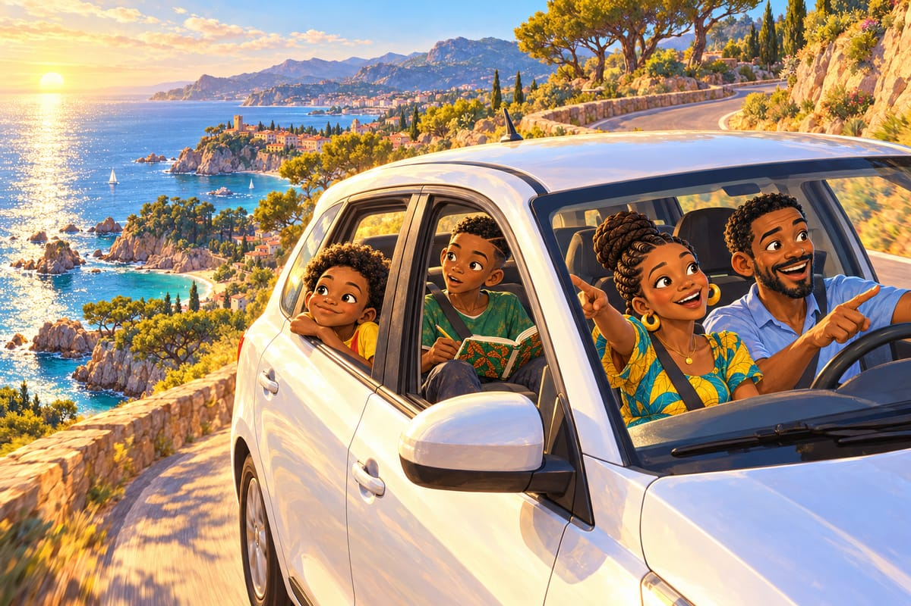

Des yeux pour partir
BAM !
Kenzo frappe dans le ballon si fort que tout le grillage de la cage tremble.
Mercredi de juin. Premier jour de chaleur. Ils sont tous les quatre dans la cage, derrière l'immeuble, comme la veille de Noël.
BriBri vient de dire la phrase qu'il répète tout bas, la nuit, depuis des semaines. D'un coup, comme on arrache un pansement.
« On part en Espagne. À Barcelone. À la fin de l'été. »
Lucas devient tout blanc. Puis tout rouge.
« Barcelone, c'est loin ? » demande-t-il tout bas.
« Plus de mille kilomètres. »
« C'est plus loin que ma ferme. »
« Mais… et la cage ? dit Kaydoudou. Et les pains au chocolat ? »
« Évidemment », dit Kenzo. Sa voix est trop calme, comme une casserole juste avant que ça déborde. « Évidemment que vous partez. Tout le monde part. Mon père part. Ma mère part. Maintenant vous. »
« Ce n'est pas nous qui choisissons, dit BriBri. C'est le travail de Papa. »
« Je m'en fiche, de qui choisit ! »
Kenzo ramasse son sac et sort de la cage sans se retourner. La porte grillagée claque. Clang.
Fais quelque chose, pense Kaydoudou. Vite.
Il court jusqu'au grillage.
« Kenzo ! Viens avec nous ! On te cache dans une valise ! Je te donne ma place, je suis petit, je rentre dans un sac ! »
Kenzo continue de marcher. La blague retombe toute seule sur le trottoir.
« Il va revenir ? » demande Lucas.
« Il revient toujours, dit Kaydoudou. Il est bien revenu à Noël. »
BriBri a les yeux qui brillent. Lucas casse une pomme en deux avec ses grandes mains, crac, et tend une moitié à chaque frère. Puis il en sort une deuxième de son sac.
« Celle-là, je la garde pour Kenzo. Au cas où. »
Kenzo ne leur parle pas pendant quatre jours.
« Kenzo, tu veux la pomme de Lucas ? » demande Kaydoudou à l'entraînement.
« Pas faim. »
« Kenzo, on peut parler ? » essaie BriBri.
« On ne parle pas. On joue. »
Il ne regarde jamais BriBri. Pendant le jeu des cinq secondes, il presse comme un fou, comme s'il voulait arracher le ballon à quelqu'un d'autre.
Kaydoudou s'assoit sur le muret, à côté d'Awa. Elle lui verse un gobelet de jus de gingembre.
« Il est fâché contre nous », dit Kaydoudou.
« Non. Il est fâché que vous partiez. Ce n'est pas pareil. »
« C'est quoi, la différence ? »
« Quand quelqu'un est en colère parce que tu t'en vas, c'est que tu comptes pour lui. Laisse-lui un peu de temps. » Elle souffle sur son gobelet. « La colère, Kaydoudou, c'est souvent de la tristesse qui a mis un manteau trop grand. »
Kaydoudou regarde Kenzo, de loin.
« Alors il a un très gros manteau. »
« Le plus gros de tout le centre », dit Awa.
Le cinquième jour, dernier match de la saison, contre l'Olympique des Trois-Moulins, les mêmes qu'au tout premier match. L'ESM gagne 3‑0. Kaydoudou reçoit entre les lignes, se tourne et fait marquer Kenzo. Comme en septembre. Mais cette fois, sans réfléchir une seule seconde.
Dans le vestiaire, Kenzo s'approche de BriBri. Il tient quelque chose de blanc, plié en quatre.
C'est son maillot de l'ESM. Blanc, avec l'étoile sur le cœur. Et dans le dos, le numéro 8.
« Tiens. »
BriBri ne le prend pas tout de suite.
« Mais… ici, le 8, c'est toi. »
« Je sais. » Kenzo hausse les épaules, et pour la première fois depuis mercredi, il le regarde dans les yeux. « Mais tu le mérites autant que moi. C'est tout. Prends-le avant que je change d'avis. Et ne le mets jamais pour jouer contre moi. »
« Promis, dit BriBri d'une voix cassée. Sauf en Coupe du monde. »
Kenzo sourit presque. BriBri prend le maillot. Alors il fait une chose que Kaydoudou ne l'a vu faire qu'avec Diego et Tyler, en Amérique. Il tend le poing.
Kenzo hésite, puis cogne son poing contre le sien. BriBri pose la main sur son cœur. Kenzo ne comprend pas tout à fait, mais il fait pareil.

« Ta pomme, Kenzo », dit Lucas en la sortant de son sac. « Je l'ai gardée. Au cas où. »
Kenzo croque dedans. « Elle est bonne, ta pomme. »
« Je sais. C'est la ferme. »
« Je vais aux toilettes », annonce Kaydoudou d'une voix bizarre.
« Tu pleures ? » demande Lucas.
« Je me mouche. C'est différent. »
Et il va se moucher très, très fort.
Dernier entraînement. Un mardi soir, à la fin du mois de juin.
Le soleil se couche derrière les peupliers, au bord de la Marne. Toute la lumière est orange, comme si quelqu'un avait renversé du jus de mangue sur le ciel. Une péniche chargée de sable glisse sur l'eau. Le marinier salue les garçons de la main.
« Ne pleure pas avant la fin, toi », dit Kenzo à Kaydoudou.
« Moi ? Je ne pleure jamais. »
Monsieur Lacombe ne fait rien de spécial. C'est ça, le plus beau.
« Chasubles. Huit contre huit. On garde le ballon. Allez. »
Exactement comme le premier jour.
« Avant de recevoir, tu regardes ! crie Lacombe. Toujours ! »
« Déjà fait, Monsieur ! »
Et Kaydoudou joue. La mésange : un regard à droite, un regard à gauche, avant chaque ballon. La souris dans le mur : il se glisse dans la poche. Et quand il perd le ballon, il ne lève pas les bras au ciel. Il attaque. Cinq secondes.
Par-dessus tout, il entend la voix de son frère. Grave. Sûre. Comme un phare.
« Seul ! »
« Homme ! »
« Tourne ! »
Dernière action. Mathis donne à BriBri, qui reçoit le corps ouvert et voit Kaydoudou dans la poche.
« Tourne ! »
Kaydoudou se tourne sans vérifier. Il a déjà regardé. À gauche, Kenzo part. À droite, Lucas monte, tout seul.
Les yeux à gauche. Le ballon à droite.
Kaydoudou regarde Kenzo. Il fait semblant de lui donner. Deux chasubles jaunes se jettent de ce côté.
Et le ballon part à droite.
Lucas frappe de toutes ses forces de paysan.
BOUM. Lucarne.
Lucas reste figé, les bras ballants, comme s'il venait de voir passer une soucoupe volante.
« J'ai marqué ? Mon premier but de la saison ? Au dernier entraînement ? »
« Tu m'as utilisé comme appât ! » rit Kenzo.
« C'est la feinte des yeux, dit Kaydoudou. Je regarde à gauche, je donne à droite. Inventée par Kaydoudou. Retenez bien ce nom. »
Il commence la danse de Roger Milla. Lacombe lève un doigt.
« Pas sur mes poteaux de corner. »
Le sifflet en métal retentit.
« Tout le monde va boire, dit Lacombe. Le grand. Le petit. Venez ici. »
« Ça y est, souffle Kenzo. Vous êtes punis. »
Lacombe regarde les deux frères longtemps, les mains dans le dos.
« Vous vous souvenez de ce que j'ai dit à votre père, le premier jour ? »
« Le grand a de la tête, dit BriBri tout bas. Le petit a de la magie. »
« Et aucun des deux n'a encore d'yeux », complète Kaydoudou.
« Vous êtes arrivés avec des pieds. » Un silence. « Vous repartez avec des yeux. »
C'est trop pour Kaydoudou. Ça monte du ventre jusqu'aux paupières, et il pleure devant tout le monde, sans se cacher. BriBri passe un bras autour de ses épaules. Sa lèvre tremble, à lui aussi.
Et puis Kaydoudou voit les yeux de Monsieur Lacombe. Ils brillent. Beaucoup trop pour un homme qui ne félicite jamais personne.
« Monsieur… Vous pleurez ? »
Lacombe renifle très fort.
« C'est le vent. »
Kaydoudou regarde autour de lui. Les peupliers ne bougent pas. La Marne est lisse comme un miroir. Pas un souffle d'air.
Il ne dit rien. Il a des yeux, maintenant. Il sait ce qu'ils voient.
BriBri, le maillot blanc de Kenzo plié sur le bras, sort le ballon de Mami de son sac. Le vieux cuir déformé, la pièce de pagne rouge et jaune.
Kaydoudou lit les signatures à voix haute.
« Ousmane. Mireille. Tonton Fokou. Diego. Tyler. Owen. Coach Whitfield. Et la flèche de Marcus. » Il lève les yeux. « Il reste de la place pour la France. »
Lucas signe le premier. Il tire la langue tellement il s'applique.
« J'ai dessiné un épi de blé. Pour la ferme. »
Kenzo signe d'un grand geste, avec une étoile. Puis il ajoute en dessous, plus petit : « Le 8 numéro 2 ».
« Pourquoi numéro 2 ? » demande BriBri.
« Pour que tu n'oublies jamais qui était le premier. »
Awa écrit une phrase en bambara.
« Ça veut dire quoi ? C'est un gros mot ? »
« Kaydoudou ! » Awa éclate de rire. « Vous le saurez quand vous serez grands. »
Puis Kaydoudou tend le ballon à Monsieur Lacombe.
Lacombe ne le prend pas. Il s'accroupit sur la pelouse, à la hauteur de Kaydoudou, qui tient le ballon à deux mains, les joues encore mouillées. Derrière eux, la péniche s'en va dans la lumière orange. Lacombe regarde chaque nom. Puis il signe d'une petite écriture serrée : « B. Lacombe ».
Il hésite.
Et à côté de son nom, en trois petits traits de feutre, il dessine une moustache.
« C'était vous ! crie Kaydoudou. La moustache sur mon plâtre ! Je le savais ! »
Lacombe se relève sans un mot, les yeux brillants, en détournant un peu la tête. Mais au coin de sa vraie moustache, il y a quelque chose qui ressemble terriblement à un sourire.
Le soir, un message vocal arrive de Douala. Des klaxons de benskins, un coq, et la voix de Mireille, toujours aussi pressée.
« On dit quoi, les Parisiens ? Écoutez bien, parce que je ne vais pas répéter cent fois, ça coûte cher ! J'ai été sélectionnée dans l'équipe féminine U15 de Douala ! Les U15, alors que j'ai même pas quinze ans ! L'entraîneuse dit que je cours comme une gazelle qui a un rendez-vous. Et Ousmane est passé gardien titulaire. Titulaire, mola ! Il a arrêté deux penalties samedi, avec ses petits pieds et ses grandes mains. Il est à côté de moi. Dis-leur, Ousmane ! »
« La tontine de l'amitié continue ! » crie une voix au fond.
« Bon, ma mère m'appelle. BriBri, arrête de faire le chef. Kaydoudou, arrête de dribbler tout le monde. Bisous de la terre rouge ! »
Kaydoudou appuie aussitôt sur le bouton pour répondre.
« Bravo, la Gazelle ! Bravo, Ousmane ! Nous, on part en Espagne. Et on a des yeux, maintenant. Bri fait toujours le chef. »
« Je ne fais pas le chef », dit BriBri depuis son lit.
« Tu entends, Mireille ? Il fait le chef. »
Ils partent un soir d'août, par le train de nuit. Les couchettes sont empilées comme des tiroirs. Kaydoudou prend celle du haut, évidemment.
« Bri ? Tu dors ? »
« Non. »
« Tu crois que Kenzo va nous oublier ? »
« Il a signé le ballon. On n'oublie pas un ballon. »
« Tu as peur, toi ? »
« Un peu. Nouvelle langue. Nouveau coach. Nouveau terrain. »
« Moi, non. J'ai des yeux, maintenant. »
« Alors regarde pour nous deux. »
« Bri ? »
« Quoi encore ? »
« Merci d'avoir donné le poing à Kenzo. »
En bas, un long silence. Puis : « Dors, Kaydoudou. »
Kaydoudou scanne la nuit par la petite fenêtre jusqu'au matin.
Après la frontière, une voiture de location les emmène le long de la côte.
« Regardez, dit Papa. Les panneaux changent de langue. »
« Et le soleil se lève du côté de la mer ! » dit Kaydoudou.
Collé à la vitre, il regarde partout.
« Qu'est-ce que tu fais ? » demande Maman.
« Je scanne l'Espagne. Pour savoir où est l'espace. »
À côté de lui, BriBri feuillette le carnet de Tonton Fokou. « Le cœur », après le Cameroun. « La raison », après l'Amérique. Puis les pages de France, pleines de flèches et de mésanges. En haut de la dernière, il reste un grand espace blanc.
BriBri mordille son crayon et écrit, en lettres capitales :
LES YEUX.
« C'est grâce à moi, dit Kaydoudou par-dessus son épaule. Six semaines sur un banc. »
« C'est grâce à ton poignet. »
« Alors merci, mon poignet. »
Au même moment, la route sort d'un virage. Et devant eux, d'un coup, il y a la mer. Immense, bleue, pleine d'étincelles, comme une nappe de fête qu'on vient de déplier.

« La mer ! » crient Papa et Maman en même temps.
BriBri se tourne vers son frère.
« Tu l'avais vue avant nous, toi. »
« Évidemment. » Kaydoudou sourit. « J'ai regardé avant. »